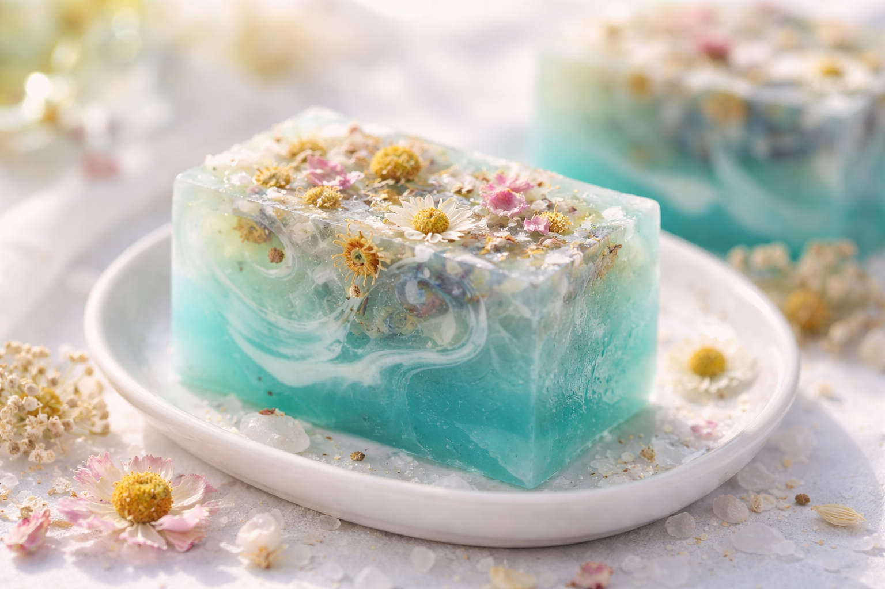

Aprendes desde cero con claridad
El contenido está pensado para principiantes. No necesitas experiencia previa para comenzar con confianza.
Curso online paso a paso para aprender desde cero
Si sientes amor por lo creativo, este curso puede acompañarte paso a paso para que crees jabones delicados, bellos y hechos por ti, incluso si hoy estas empezando desde cero.
Lo que vas a lograr dentro del programa
El contenido está pensado para principiantes. No necesitas experiencia previa para comenzar con confianza.
Aprendes técnicas para lograr jabones delicados, creativos y con una terminación visual que enamora.
Puedes usar lo aprendido para regalar, disfrutar en casa o dar forma a una pequeña propuesta artesanal con identidad propia.

Conoce a la creadora
Desde pequeña, Karen sintió pasión por las manualidades y el arte de crear con las manos. Con el tiempo descubrió la jabonería artesanal de glicerina y encontró en ella una forma de crear piezas bellas y con identidad propia.
Hoy comparte este hermoso arte con mujeres que quieren iniciarse con una guía confiable, aprender con seguridad y transformar su creatividad en algo bello, útil y con valor real.
A través de este programa, Karen acompaña paso a paso a quienes quieren lograrlo, incluso si hoy están empezando desde cero.
La confianza se construye con resultados
"Muy didáctica y encantadora en sus explicaciones, me encanta como la profe enseña."
"Feliz de aprender, todo muy claro. Felicitaciones a la profe por su motivación constante y todo muy bien explicado."
"Muy buena experiencia, bien explicada, me ha gustado mucho."
"Me encantó el curso, sin duda fue un gran paso para poder emprender en este mundo de los jabones."
Belleza, detalle y valor percibido
Este programa te enseña a trabajar una técnica artesanal con sensibilidad estética, para que cada pieza tenga presencia, encanto y un acabado digno de regalo, de uso personal o incluso de una colección propia.
Quiero acceder al programa
Asoma un ojo al curso por dentro
Una vista breve para que sientas el estilo del programa, la forma de enseñar y el tipo de piezas que puedes aprender a crear paso a paso.
Mira lo que puedes llegar a crear


Lo que incluye tu acceso
Si esto resuena contigo, este programa puede ser para ti
Disfrutas lo artesanal, el detalle, los aromas, la estética y la satisfacción de crear algo con tus manos.
Buscas algo que te conecte contigo, te relaje y además te deje un resultado útil, bello y valioso.
Tal vez quieres hacer piezas especiales para ti, para otros o incluso abrir la puerta a un pequeño proyecto personal.
Esto puede ayudarte si hoy piensas algo como esto
No hace falta. El programa está pensado para que empieces desde cero y avances con seguridad.
Justamente por eso necesitas una guía clara, ordenada y explicada paso a paso.
Puedes vivirlo como una actividad creativa para ti o convertirlo en una propuesta artesanal con valor comercial.
Compra con tranquilidad
Sabemos que dar el primer paso genera dudas. Por eso dispones de 7 días desde tu compra para revisar el contenido. Si sientes que no era para ti, puedes solicitar la devolución dentro de ese plazo.
Preguntas frecuentes
No. El programa está pensado para principiantes y te guía paso a paso desde cero.
Sirve para ambas cosas. Puedes vivirlo como una actividad creativa para ti, para regalar o como base de un proyecto artesanal.
Justamente por eso existe el programa: para que no improvises y avances con una guía clara y ordenada.
Aprendes técnica, presentación, línea natural y también contenidos orientados a costos, precios y venta.
Dispones de 7 días de garantía para revisar el programa y decidir con tranquilidad.
Sí, porque son productos con alto valor percibido: se ven delicados, se personalizan y pueden presentarse de forma muy atractiva.
Tu siguiente paso puede empezar hoy
No necesitas tenerlo todo resuelto para comenzar. Solo necesitas una buena guía, ganas de aprender y el deseo de hacer algo con tus manos que tenga belleza, utilidad y valor.
Quiero empezar ahora